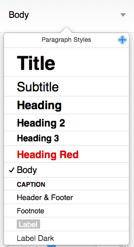

使用 Pages 制作 ePub 格式的电子书
缘起
最近没事就使用 iPhone 上的 iBooks 来阅读点东西，渐渐喜欢上了该应用。相较于波澜不惊的 Mac 版，iPhone 内置的 iBooks 应用翻页效果堪称惊艳，而其它功能如书签、标注、跳转等用户体验也相当不错。无奈书籍资源实在太少，遂产生制作/修改 ePub 格式电子书的念头。作为「原生党」，自然而然就想到使用 Pages 来尝试制作啦。完成以后感觉整体效果还不错，于是把制作过程记录一下，希望于读者朋友们能够有所参考。
前期准备
既然涉及到电子书制作，首当其冲的任务当然是获得文本「原料」。如果你本身即是作者，那「原料」当然不成问题。但如若想要从技术教程或网络博客制作电子书，则多数情况下你获取到的可能为 TXT 格式文本甚至 HTML 源文件。无论哪种情况，考虑到 Pages 正则替换功能缺失，强烈建议事先使用 Sublime Text 处理下章节、空行、缩进等问题。此外另有两个小技巧可介绍给大家：
-
打开终端输入
cat chapter-[1-9].xhtml >> 上卷.xhtml，该命令将1~9章节内容合并到「上卷」文件中； -
使用之前介绍过的 ClipMenu 的
Strip Tags功能，可将 HTML/XHTML 源文件转换为纯文本；
因该处遇到的情况各不相同，不便深入展开。需要说明的是：前期准备并非必要步骤，但是妥当处理可减少许多 Pages 不必要的麻烦操作。
制作过程
接下来打开 Pages 新建文档，并粘贴文本。从右侧面板选择 Body 样式，并设置字号为 14pt 。当然其它字号也可以，但笔者发现这样 iPhone 上不需额外调整即可方便阅读。所以在此以该字号为基础设置吧！

文档目录
定位光标到文档开头，点击菜单栏 Insert - Table of Contents - Document 插入目录列表。Pages 将会出现类似的提示：
The table of contents is empty because you aren't using the paragraph styles set to appear in it.
需要知道的是：多数文字处理器均通过段落样式来产生目录列表。该提示说明我们该去设置章节样式啦，目录列表在设置样式时会自动更新内容。
章节样式
建议开始前脑海里简单规划下文档层级和样式，避免前后不一致重复返工。这里我们仅将「上/下卷」、「第 * 章」等分别设置为 Heading 2, Heading 3 样式，两者均为加粗并居中，段落后添加一行空隙。操作过程中可使用查找功能及页面缩略图快速跳转，设置完毕可到首页目录列表对照查看是否有遗漏的章节。
图文混排
因 iPhone 屏幕阅读面积有限，大部分情况下我们需要图片能铺满屏幕。然而遗憾的是，Pages 生成的电子书中的图片尺寸并不能自适应屏幕，而是固定大小。为使图片不超出边界，建议给图片设置的格式为水平居中，宽高约为200pt x 300pt。
封面图片
依旧是文档开头插入新页，复制并粘贴制作好的封面图片，将图片大小调整为铺满整个页面。设置对齐方式为「垂直/水平居中」即可。
看到这里读者朋友们可能已经注意到了，以上所谓的「制作过程」仅为文字处理器一般的操作步骤(仅需注意下细节设置)。也就是说，只要你之前 MS Word 或者 Pages 使用很熟练的话，制作 ePub 格式的电子书并没有给你增加多余的学习成本。
导出电子书
将制作的文档保存后，就可以点击菜单栏 File - Export To - ePub… 导出电子书。依序填写弹出的菜单中书名、作者、分类等信息，注意勾选 Use the first page as the book cover image 选项以生成书籍封面。然后点击 Next… 保存即可。
OK，至此 ePub 电子书制作完毕。接下来你就可以将其通过 iTunes 同步到 iPhone，然后随时随地阅读啦。
了解更多
EPub是一个自由的开放标准，属于一种可以“自动重新编排”的内容；也就是文字内容可以根据阅读设备的特性，以最适于阅读的方式显示。EPub文件内部使用了XHTML或DTBook（一种由DAISY Consortium提出的XML标准）来展现文字、并以zip压缩格式来包裹文件内容。EPub格式中包含了数字版权管理（DRM）相关功能可供选用。 1
从维基百科我们知道 ePub 格式电子书使用 XHTML(+CSS) 来定义文档结构及样式，使用 zip 来打包文件。这意味着我们能方便地解包 ePub 文件，对源码进行高度自定义修改，然后再打包回去。 这里 提供了方便的 ePub 解压缩工具：ePub Zip/Unzip 3.0.app。 维基百科 此页面 也囊括了一些制作 ePub 格式电子书的第三方软件，感兴趣的读者可以自行安装尝试。
文章链接：https://macplay.github.io/en/posts/shi-yong-pages-zhi-zuo-epub-ge-shi-de-dian-zi-shu/
发布/更新于：
版权声明：如无特别说明，本站文章均遵循 CC BY-NC-SA 4.0 协议，转载请注明作者及出处。